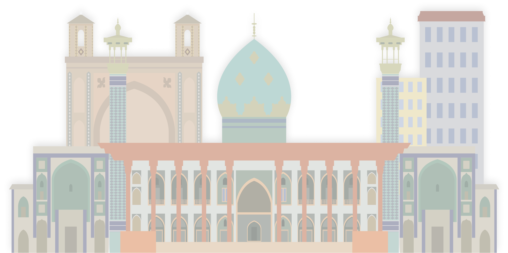
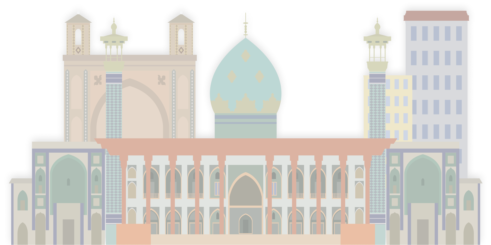

شیراز، قلب فرهنگی ایران و یکی از قطبهای بزرگ علمی، تاریخی، گردشگری و اقتصادی جنوب کشور است.

شیراز، قلب فرهنگی ایران و یکی از قطبهای بزرگ علمی، تاریخی، گردشگری و اقتصادی جنوب کشور است.

مهر ۱۴۰۱ - تا کنون

مرداد ۱۴۰۱ - مهر ۱۴۰۱

شهریور ۱۴۰۰ - مرداد ۱۴۰۱

مرداد ۱۴۰۰ - شهریور ۱۴۰۰

آبان ۱۳۹۶ - مرداد ۱۴۰۰

مرداد ۱۳۹۶ - آبان ۱۳۹۶

۱۳۸۹ - مرداد ۱۳۹۶

خرداد ۱۳۸۶ - ۱۳۸۹

اردیبهشت ۱۳۸۶ - خرداد ۱۳۸۶

آذر ۱۳۸۴ - اردیبهشت ۱۳۸۶

خرداد ۱۳۸۲ - آذر ۱۳۸۴
اردیبهشت ۱۳۸۲ - خرداد ۱۳۸۲

آبان 1376 - اردیبهشت 1382

دی 1373 - آبان 1376

فروردین 1372 - دی 1373
خرداد 1367 - خرداد 1367
اردیبهشت 1367 - بهمن 1371

1364 - 1367

خرداد 1364 - دی 1364
اردیبهشت 1364 - خرداد 1364
تیر 1362-اردیبهشت 1364
1361-تیر 1362
مهر 1359-اردیبهشت 1360

1360 - 1361